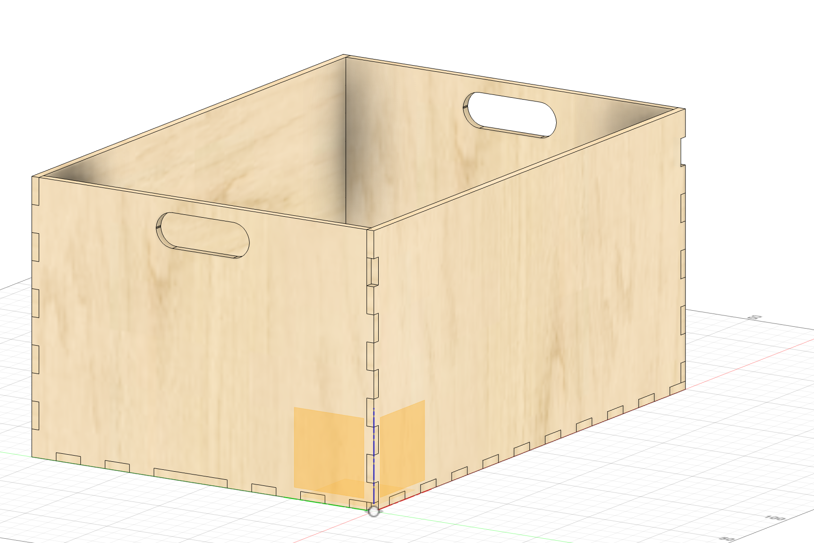
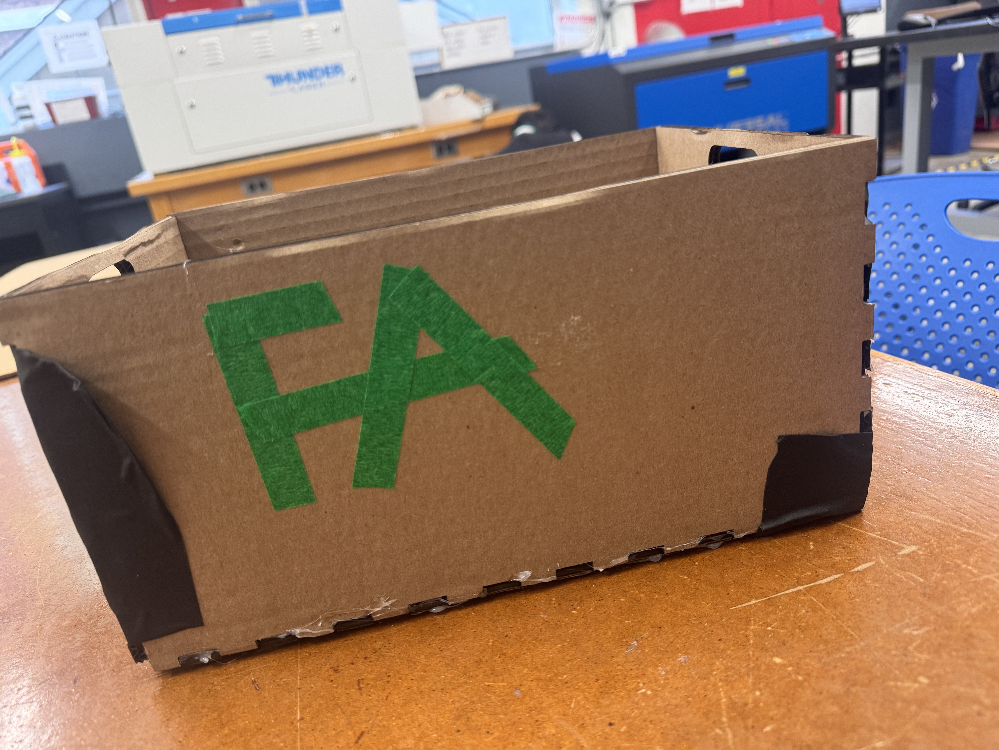
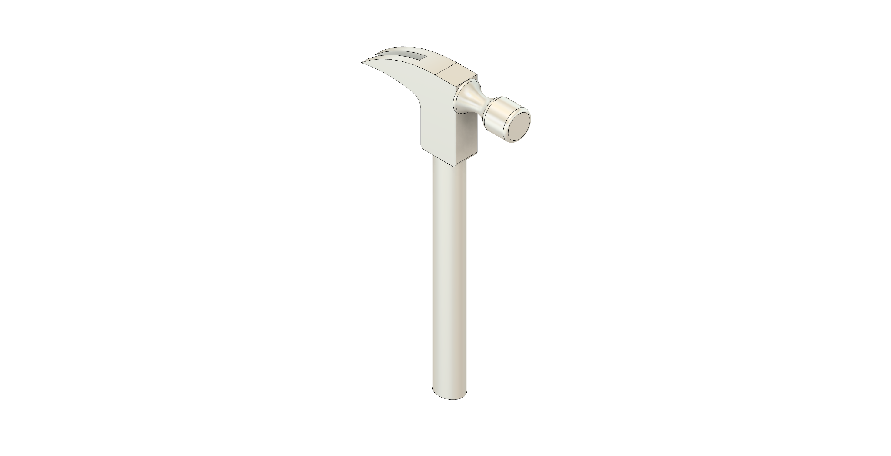
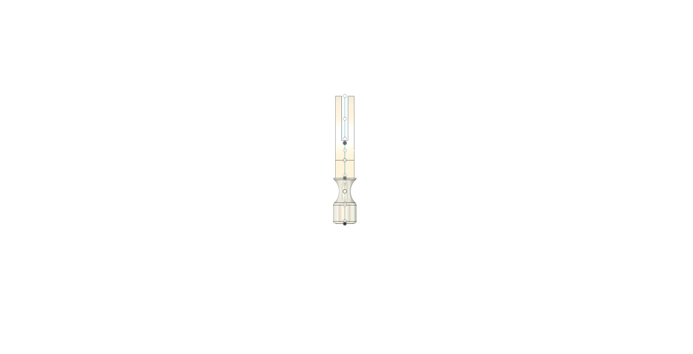
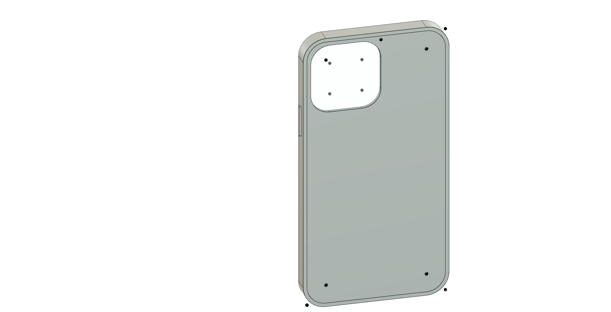
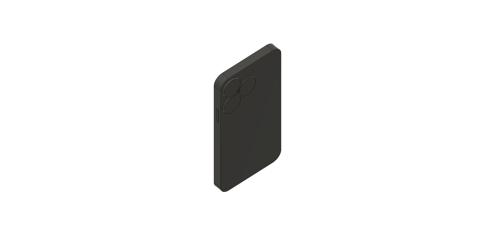

<div class="textcontainer">
<p class="margin"> </p>
<h3>Week 2: 2D Design & Cutting</h3>
<p class="margin"> </p>
<h4>Assignment 1: Make a Box</h4>
<p class="margin">
This week's assignment was to design and build a box that is shoebox-sized or smaller. The goal of this exercise was to practice using Fusion 360 to create simple designs for laser cutting.
In the lab that week, we also got to use/or were intoduced to the laser cutter and other tools in the shop. As part of this assignment, I learned how to set up the machine and get comfortable with the tool.
My design was inspired by Isa's (a PS70 former student).
</p>
<div>

<p style = "align-items: center; margin: left;"> <i>Box Size: 300 mm lenght X 210 mm width X 150 mm height</i></p>
</div>
<div> <p style = "align-items: center;"><b> Box pictures </b></p>

<img src="box_inside.JPG" alt="placeholder for you about me image" style="width:450px; height: 300px;">
</div>
<p class="margin"> </p>
<h4>Assignment 2: Fusion 360 Tutorial and Fusion Modeling</h4>
<p class="margin">
<p>For this assignment, I tried designing a hammer we have in the lab. It was my first time modeling something with more complex curves and irregular features, and I quickly realized how much more I still have to learn in Fusion.</p>
<p>One challenge I ran into was figuring out how to make revolving or curved structures that aren’t perfectly symmetric. Most tutorials I’ve seen focus on the extrude tool, which is great for basic shapes, but doesn’t really work for parts like the hammer handle — which isn’t a perfect cylinder or ellipse. I want to learn how to use revolve and sweep for shapes that change profile as they curve, especially for asymmetrical forms.</p>
<p>Another thing I’m still trying to understand is how to make objects look more textured or real. Right now, my hammer is completely smooth, but in real life, hammers have material variation and patterning (like grip ridges on the handle). I’m hoping to learn how to model those kinds of details later.</p>
<p>I also learned that it’s important to use components if I want to apply different materials to different parts. Right now, my hammer is just one body, which made it harder to assign separate materials to the head and handle. That’s definitely something I want to do better going forward.</p>
<p>To get more comfortable with assemblies, I started working on a simple phone and phone case model. I tried to build them as separate parts and fit them together, but I realized I don’t fully understand how joints work in Fusion yet. I just made sure they looked like they fit together and called it a day — but I plan to come back to it (with help from office hours!).</p>
<p>Overall, this was a great learning experience. I’m starting to get more comfortable thinking about design in front view, top view, and how those sketches translate into a 3D object.</p>
</p>
<div> <h4 style = "align-items: center;"><u> Hammer Model Pictures (3D Design followed by a front view)</u></h>
<div>
<p style = "align-items: center;"> <br>
 <p style = "align-items: center;"><i> Top View of the hammer design portrays one of the issues I ran into: if you loock closely at the projection, you can see that there is part of one of the smaller cylinders (if you refer back to the 3D), that is sticking out or that is larger than the rectangle. A solution to this would be to make the rectangle case larger, which didn't fit right with the rest of the design. Another solution was cutting out that part, but then the shape doesn't make sense as there was no way to cut it such that we maintain a cylindrical shape.</i></p>
</div>
</div>
<div> <h4 style = "align-items: center;"><u> Hammer Model Pictures (3D Design followed by a front view)</u></h>
<div>
<p style = "align-items: center;"> <br>

</div>
</div>
</div>